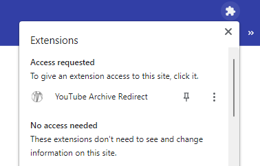

First, pin the icon to the taskbar. It should be in the plugin dropdown window.
Then, go to a YouTube link. It will automatically check if the video is available on the Internet Archive.
When the icon is , it means that you are not on a YouTube tab. The URLs that YITA currently supports should look like this: https://www.youtube.com/watch?v=*. If the icon is white on a valid YT video link, then please let me know.
If the icon is , it means that the video is available on the IA. To go there, just click the icon. It will open a new tab.
If the icon is , it means that it is not available on the IA. If the video has already been deleted, then it most likely means there is no way to watch that video. If it is still online and at risk of being deleted, I recommend using Bibliotheca Anonoma's tubeup to backup those videos.
If you want to know more about YouTube, try Archive Team's wiki page on it.
That's all. Thanks again for installing!